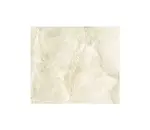

Piso cerâmico Arielle 54×54 PEI Miami Beige
Preço: R$ 31,90
Descrição do produtoO piso Arielle Miami beige é uma ótima opção para deixar o ambientes mais elegante
e sofisticado.Possui acabamento em alta definição, sua tonalidade é elegante e sua
textura é suave.